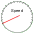

<!--Template for each tab.  Defined in the root directory so that image references don't have to between development/runtime (so that IDE navigation/highlighting works for them)-->
<div id="<%= id%>" class="tab">

    <!--Has to go in front of canvas but behind buttons so couldn't factor it out of tab-->
    <ul class="nav nav-pills">
        <li class="introductionTabButton"><a href="#">Introduction</a></li>
        <li class="frictionTabButton"><a href="#">Friction</a></li>
        <li class="trackPlaygroundTabButton"><a href="#">Track Playground</a></li>
    </ul>

    <canvas class="play-area"></canvas>

    <div class="control-panel">
        <!--We wanted to use data-toggle="buttons-checkbox"  but it didn't seem to work, so we just added our own CSS overrides for js-active-button instead.-->
        <div class="btn-group btn-group-vertical">
            <button class="btn barGraphButton"><%= barGraph %> on tab <%= id %></button>
            <button class="btn pieChartButton"><%= pieChart %></button>
            <button class="btn gridButton"><%= grid %></button>
            <button class="btn speedometerButton"><%= speed %></button>
        </div>
        <div class="reset-controls">
            <button class="btn-large">Return Skater</button>
            <button class="btn-large reset-all-button">Reset All</button>
        </div>
    </div>

    <div class="footer"></div>

</div>